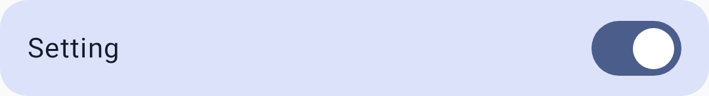
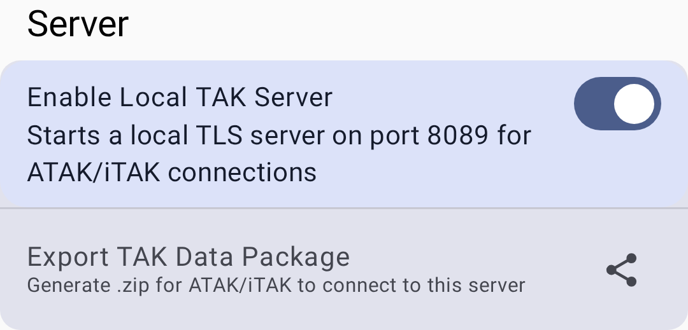

TAK 連携
Meshtastic は Team Awareness Kit（TAK）エコシステムと連携し、Meshtastic のメッシュデバイスと、ATAK や WinTAK などの TAK アプリケーションとの相互運用を可能にします。
概要
TAK モジュールを使うと、Meshtastic のノードは次のことができます：
- TAK 互換の CoT（Cursor on Target）形式で位置データを共有する
- TAK のマップ表示上にチームメンバーとして表示される
- TAK の PLI（位置情報）メッセージを受信する
セットアップ
前提条件
- ATAK（Android Team Awareness Kit）または WinTAK がインストールされていること
- Meshtastic ATAK プラグインがインストールされていること
- Meshtastic 無線機で TAK モジュールが有効になっていること
設定
- 「設定 → モジュール設定 → TAK」に移動します。
- TAK モジュールを有効にします。
- TAK のチーム／グループ設定を構成します：

| 設定項目 | 説明 |
|---|---|
| 有効 | TAK 相互運用を有効化 |
| モード | TAK 互換の出力モード |
ATAK プラグインのセットアップ
- プラグインリポジトリから Meshtastic ATAK プラグインをインストールします。
- ATAK を開き、Meshtastic プラグインを有効にします。
- プラグインは、ATAK とメッシュネットワークの間でメッセージを橋渡しします。
ローカル TAK サーバー
The app can also run a local TAK server so ATAK/iTAK on the same device can connect directly, without a remote TAK server. The server binds to localhost only (127.0.0.1:8089) and uses TLS with mutual certificate authentication (mTLS), so it is not reachable from other devices on the network. 「設定 → モジュール設定 → TAK → TAK サーバー」を開きます：

- Enable Local TAK Server — starts the loopback-only mTLS server on port 8089 for ATAK/iTAK connections from the same device.
- TAK データパッケージをエクスポート：ATAK／iTAK がこのサーバーに接続するためにインポートできる
.zipデータパッケージを生成します。
TAK の役割
TAK 関連の役割を設定したノードは、標準のクライアントとは動作が異なります：
| 役割 | 説明 |
|---|---|
| TAK | 完全な TAK 相互運用。CoT データ、チャットメッセージ、PLI 更新を送受信します。 標準のクライアントとして機能し、さらに TAK ブリッジも兼ねます。 |
| TAK Tracker | 位置情報のみの TAK 出力。ユーザーの操作なしに、一定間隔で自動的に PLI をブロードキャストします。 無人の位置ビーコン（車両、機材、ウェイポイント）に最適化されています。 チャットメッセージは中継しません。 |
💡 ヒント： 位置の報告だけが必要なデバイス（例：車両に取り付けた無線機）には TAK Tracker を使用します。 ユーザーが TAK の運用に積極的に参加するデバイスには TAK を使用します。
CoT（Cursor on Target）形式
TAK のメッセージは Cursor on Target の XML 形式を使用します。これは状況認識データを共有するための軍事標準です。 Meshtastic は、TAK システムに橋渡しする際に内部の protobuf メッセージを CoT 形式に変換するため、手動での形式変換は必要ありません。
TAK のアイデンティティ
TAK の役割を使用すると、ノードは TAK のマップに表示されるアイデンティティ情報をブロードキャストします：
| 設定項目 | 説明 |
|---|---|
| チームカラー | TAK のマップ上でのチームの色（例：ブルー、レッド、シアン、グリーン） |
| メンバーロール | 運用上の役割（チームメンバー、チームリード、HQ、メディック、RTO など） |
これらの設定は、TAK モジュールが有効なときに「設定 → モジュール設定 → TAK」に表示されます。 TAK のコールサインは別個の設定ではありません。Meshtastic のノード名から自動的に導かれます。
💡 ヒント： チーム／役割の色は、TAK の標準的な所属色です。 一貫したチーム割り当てを使うよう、TAK チームと調整してください。
ワイヤ形式（V1／V2）
Meshtastic は 2 つの TAK ワイヤ形式に対応しており、接続中の無線機のファームウェアに基づいて自動的に選択されます。手動での設定は必要ありません：
| 形式 | 互換性 | 機能 |
|---|---|---|
| V1（レガシー） | ファームウェア 2.7.x 以前 | ポート 72 での素の protobuf エンコード。 位置共有（PLI）とチャット（GeoChat）のみに対応。図形、マーカー、ルート、その他の型付き CoT イベントは破棄されます |
| V2（現行） | ファームウェア 2.8.0 以降 | ポート 78 でのコンパクトな zstd 圧縮エンコード。 V1 が対応するすべてに加えて、図形、マーカー、ルート、航空機、casevac、緊急、タスクの CoT タイプを追加します |
ノードは V2 を実行していても、古いノードからのレガシーな V1 パケットを引き続き中継するため、ファームウェアが混在したメッシュでも動作し続けます。
ATAK での使用
設定が完了すると：
- Meshtastic のノードが、コールサインのラベル付きで ATAK のマップにマーカーとして表示されます
- チャットメッセージを、メッシュと TAK ネットワークの間で橋渡しできます
- 位置の更新が、Meshtastic と TAK の間で双方向に流れます
- TAK Tracker のノードは自動的に PLI をブロードキャストします。ATAK 側の設定なしで、その位置が ATAK のマップに表示されます
⚠️ 注意： TAK 連携には、特定のノードの役割とモジュールの設定が必要です。 標準のクライアントノードは、自動的には TAK の運用に参加しません。
トラブルシューティング
| 問題 | 原因 | 解決策 |
|---|---|---|
| ノードが ATAK のマップに表示されない | TAK モジュールが無効、または役割が正しくない | TAK モジュールが有効で、ノードの役割が TAK または TAK Tracker になっているか確認する |
| 位置の更新が古い | GPS 測位が失われた、または間隔が長すぎる | GPS の状態を確認し、位置情報設定で位置のブロードキャスト間隔を短くする |
| ATAK プラグインが「切断」と表示する | BLE 接続が失われた、またはプラグインがクラッシュした | Meshtastic アプリで Bluetooth を再接続し、その後 ATAK プラグインを再起動する |
| 図形、マーカー、ルートが橋渡しされない | 送信側のノードがレガシーな V1（ファームウェア 2.7.x 以前）である | V2 ワイヤ形式にするため、送信側のノードのファームウェアを 2.8.0 以降に更新する |
| CoT データが流れない | チャンネルの不一致 | すべての TAK ノードが、暗号化が一致した同じチャンネル上にある必要がある |
セキュリティに関する注意
- TAK データは、あなたの位置とコールサインの情報を共有します
- 機密性の高い環境で TAK を使用する場合は、チャンネルの暗号化を設定してください
- TAK モジュールは、他の Meshtastic メッセージと同じチャンネル暗号化に従います
関連トピック
- 設定：モジュールと管理：TAK モジュールの設定
- ノード：ノードリストの TAK と TAK Tracker の役割
- マップとウェイポイント：マップ上のノードの位置
- ATAK plugin guide — detailed ATAK setup on meshtastic.org